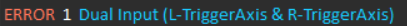

DDR Controls:

Left (Green): Turns it left normally
Right (Green): Turns it right normally
Up (Blue): Drives Forwards
Left (Red): Swevre drives left
Right (Red): Swevre drives right
Down (Blue): Drives Down
XBOX Controls:
Hold right trigger while using Xbox controls!
Modified arcade drive (Left Y [Forwards/Backwards] Left X [Rotate Left/Rotate Right] Right X [Swerve Left / Swerve Right] )
Using an XBOX controller with the DDR pad will result in the code ignoring the DDR inputs and only listening to the Xbox Controller.
Arm Controls:
To control the arm, hold Left Trigger Axis on your controller.
Heads up: It will send an error if you hold both triggers at the same time

Bring forearm towards you (L y-axis up) / away from you (L y-axis down) [From the POV of behind the robot]
Bring arm up {away from you} (R y-axis up) / arm down (R y-axis down) [From the POV of behind the robot]
This may feel as if the robot arm's controls are reversed.